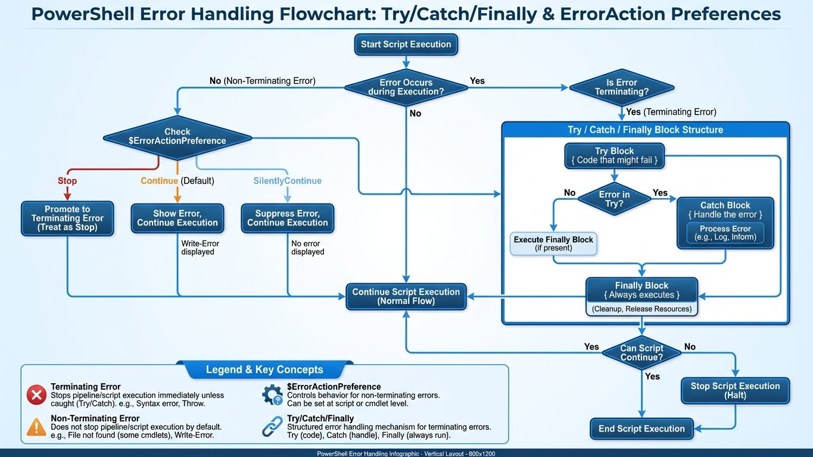

Workshop PowerShell : Les Bonnes Pratiques
Ce workshop compile les meilleures techniques issues de scripts professionnels. Source : Analyse des démos de formation (Thomas Boutry).

1. La Gestion des Erreurs (ErrorAction)
En production, un script ne doit pas planter silencieusement ou afficher du rouge effrayant sans explication.
Stop, Continue, SilentlyContinue
# Arrête tout si le fichier n'existe pas (Critical)
Get-Item "C:\Config\Secret.conf" -ErrorAction Stop
# Continue même si ça échoue (Non-Critical, ex: cleanup de fichiers temp)
Remove-Item "C:\Temp\*.tmp" -ErrorAction SilentlyContinue
# Capture l'erreur dans une variable sans l'afficher
Get-Service "ServiceInconnu" -ErrorAction SilentlyContinue -ErrorVariable MonErreur
if ($MonErreur) {
Write-Warning "Le service n'existe pas, mais on continue..."
}
Try/Catch/Finally (Gestion Structurée)
La méthode professionnelle pour gérer les erreurs critiques.
try {
# Code critique qui peut échouer
$Config = Get-Content "C:\Config\app.json" -ErrorAction Stop | ConvertFrom-Json
# Connexion à une base de données
$Connection = New-Object System.Data.SqlClient.SqlConnection
$Connection.ConnectionString = $Config.ConnectionString
$Connection.Open()
Write-Host "Connexion réussie à la base de données" -ForegroundColor Green
}
catch [System.IO.FileNotFoundException] {
Write-Error "Le fichier de configuration est introuvable !"
exit 1
}
catch [System.Data.SqlClient.SqlException] {
Write-Error "Erreur de connexion SQL : $($_.Exception.Message)"
exit 2
}
catch {
# Catch générique pour toutes les autres erreurs
Write-Error "Erreur inattendue : $($_.Exception.Message)"
Write-Host "Ligne : $($_.InvocationInfo.ScriptLineNumber)" -ForegroundColor Yellow
exit 99
}
finally {
# Toujours exécuté, même en cas d'erreur (cleanup)
if ($Connection -and $Connection.State -eq 'Open') {
$Connection.Close()
Write-Verbose "Connexion fermée proprement"
}
}
$ErrorActionPreference Globale
# En début de script, définir le comportement par défaut
$ErrorActionPreference = "Stop" # Tout échoue = script s'arrête
# $ErrorActionPreference = "Continue" # (Défaut) Affiche l'erreur et continue
# $ErrorActionPreference = "SilentlyContinue" # Ignore les erreurs
# Ensuite, override localement si besoin
Get-Service "OptionalService" -ErrorAction SilentlyContinue
2. Le Pipeline et les Objets
La force de PowerShell est de manipuler des Objets, pas du texte.
Filtrer avant de traiter (Performance)
- Mauvais (Récupère tout, puis filtre) :
- Bon (Filtre à la source, si la Cmdlet le permet) :
Créer ses propres objets (Custom Object)
Idéal pour l'export CSV ou JSON.
$Rapport = @()
foreach ($Disk in Get-CimInstance Win32_LogicalDisk) {
# On crée un objet propre avec juste ce qu'on veut
$Info = [PSCustomObject]@{
Lettre = $Disk.DeviceID
TailleGB = [math]::Round($Disk.Size / 1GB, 2)
EspaceLibre = [math]::Round($Disk.FreeSpace / 1GB, 2)
Pourcentage = [math]::Round(($Disk.FreeSpace / $Disk.Size) * 100, 1)
}
$Rapport += $Info
}
# Export facile
$Rapport | Export-Csv "C:\Logs\DiskReport.csv" -NoTypeInformation
3. WhatIf et Confirm
Toujours implémenter ces switchs pour les actions destructrices.
function Remove-VieuxLogs {
[CmdletBinding(SupportsShouldProcess=$true)]
param (
[string]$Path
)
# La magie est ici : $PSCmdlet.ShouldProcess
if ($PSCmdlet.ShouldProcess($Path, "Supprimer les fichiers de plus de 30 jours")) {
Get-ChildItem $Path | Where-Object LastWriteTime -lt (Get-Date).AddDays(-30) | Remove-Item
}
}
# Utilisation sans risque
Remove-VieuxLogs -Path "C:\Logs" -WhatIf
4. Fonctions Avancées (Advanced Functions)
Les fonctions professionnelles utilisent [CmdletBinding()] et la validation de paramètres.
CmdletBinding et Parameter Validation
function New-ReportUtilisateur {
[CmdletBinding()]
param (
# Paramètre obligatoire
[Parameter(Mandatory=$true,
ValueFromPipeline=$true,
HelpMessage="Nom de l'utilisateur à rechercher")]
[ValidateNotNullOrEmpty()]
[string]$Username,
# Choix limité (enum-like)
[Parameter()]
[ValidateSet("JSON", "CSV", "XML")]
[string]$Format = "JSON",
# Validation de range
[Parameter()]
[ValidateRange(1, 365)]
[int]$DaysBack = 30,
# Validation de pattern (email)
[Parameter()]
[ValidatePattern("^[\w-\.]+@([\w-]+\.)+[\w-]{2,4}$")]
[string]$Email,
# Validation de chemin existant
[Parameter()]
[ValidateScript({ Test-Path $_ })]
[string]$OutputPath = "C:\Reports"
)
begin {
Write-Verbose "Initialisation du rapport (format: $Format)"
$Results = @()
}
process {
# Process est appelé pour chaque élément du pipeline
Write-Verbose "Traitement de l'utilisateur: $Username"
$UserInfo = [PSCustomObject]@{
Username = $Username
Email = $Email
DateRapport = Get-Date -Format "yyyy-MM-dd HH:mm"
Periode = $DaysBack
}
$Results += $UserInfo
}
end {
# Génération du fichier final
$OutputFile = Join-Path $OutputPath "Report_$(Get-Date -Format 'yyyyMMdd').$($Format.ToLower())"
switch ($Format) {
"JSON" { $Results | ConvertTo-Json | Out-File $OutputFile }
"CSV" { $Results | Export-Csv $OutputFile -NoTypeInformation }
"XML" { $Results | Export-Clixml $OutputFile }
}
Write-Host "Rapport généré : $OutputFile" -ForegroundColor Green
}
}
# Exemples d'utilisation
New-ReportUtilisateur -Username "jdupont" -Email "j.dupont@entreprise.fr" -Format CSV -Verbose
# Via pipeline
"alice", "bob", "charlie" | New-ReportUtilisateur -Format JSON -DaysBack 60
Paramètres dynamiques (DynamicParam)
function Get-ServiceDetails {
[CmdletBinding()]
param()
DynamicParam {
# Créer une liste dynamique basée sur les services réels
$ServiceNames = (Get-Service).Name
$AttributeCollection = New-Object System.Collections.ObjectModel.Collection[System.Attribute]
$ParameterAttribute = New-Object System.Management.Automation.ParameterAttribute
$ParameterAttribute.Mandatory = $true
$AttributeCollection.Add($ParameterAttribute)
$ValidateSetAttribute = New-Object System.Management.Automation.ValidateSetAttribute($ServiceNames)
$AttributeCollection.Add($ValidateSetAttribute)
$RuntimeParameter = New-Object System.Management.Automation.RuntimeDefinedParameter('ServiceName', [string], $AttributeCollection)
$RuntimeParameterDictionary = New-Object System.Management.Automation.RuntimeDefinedParameterDictionary
$RuntimeParameterDictionary.Add('ServiceName', $RuntimeParameter)
return $RuntimeParameterDictionary
}
process {
$ServiceName = $PSBoundParameters['ServiceName']
Get-Service $ServiceName | Select-Object Name, Status, StartType, DisplayName
}
}
5. Classes PowerShell (OOP)
Depuis PowerShell 5.0, on peut créer des classes complètes.
# Définition d'une classe
class Serveur {
# Propriétés
[string]$Nom
[string]$IP
[ValidateSet("Dev", "Test", "Prod")]
[string]$Environnement
[bool]$IsOnline
# Propriété calculée (en lecture seule)
[string]hidden $LastCheck
# Constructeur par défaut
Serveur() {
$this.LastCheck = Get-Date -Format "yyyy-MM-dd HH:mm:ss"
}
# Constructeur avec paramètres
Serveur([string]$nom, [string]$ip, [string]$env) {
$this.Nom = $nom
$this.IP = $ip
$this.Environnement = $env
$this.LastCheck = Get-Date -Format "yyyy-MM-dd HH:mm:ss"
$this.VerifierConnexion()
}
# Méthode
[void]VerifierConnexion() {
$this.IsOnline = Test-Connection -ComputerName $this.IP -Count 1 -Quiet
$this.LastCheck = Get-Date -Format "yyyy-MM-dd HH:mm:ss"
}
# Méthode avec retour
[string]GetStatus() {
$status = if ($this.IsOnline) { "ONLINE" } else { "OFFLINE" }
return "$($this.Nom) ($($this.IP)) - $status - Env: $($this.Environnement)"
}
# Méthode statique
static [string]GetVersion() {
return "ServerManager v1.0"
}
}
# Héritage de classe
class ServeurWeb : Serveur {
[string]$SiteWeb
[int]$Port
ServeurWeb([string]$nom, [string]$ip, [string]$env, [string]$site, [int]$port) : base($nom, $ip, $env) {
$this.SiteWeb = $site
$this.Port = $port
}
[bool]TestHTTP() {
try {
$Response = Invoke-WebRequest -Uri "http://$($this.IP):$($this.Port)" -TimeoutSec 5 -UseBasicParsing
return $Response.StatusCode -eq 200
}
catch {
return $false
}
}
}
# Utilisation
$serveur1 = [Serveur]::new("SRV-DB01", "192.168.1.10", "Prod")
$serveur1.GetStatus()
$webServer = [ServeurWeb]::new("SRV-WEB01", "192.168.1.20", "Prod", "intranet.local", 80)
if ($webServer.TestHTTP()) {
Write-Host "Le serveur web répond correctement" -ForegroundColor Green
}
# Méthode statique
[Serveur]::GetVersion()
6. PowerShell Remoting (PSSession)
La gestion à distance est essentielle pour l'administration d'infrastructure.
Configuration WinRM
# Sur la machine cible (une seule fois)
Enable-PSRemoting -Force
# Vérifier la config
Get-WSManInstance -ResourceURI winrm/config/listener -Enumerate
# Ajouter des machines de confiance (si pas dans domaine)
Set-Item WSMan:\localhost\Client\TrustedHosts -Value "192.168.1.*" -Force
Invoke-Command (One-shot)
# Commande unique sur une machine distante
Invoke-Command -ComputerName "SRV-DB01" -ScriptBlock {
Get-Service | Where-Object Status -eq "Running"
}
# Sur plusieurs machines en parallèle
$Serveurs = "SRV-WEB01", "SRV-WEB02", "SRV-APP01"
Invoke-Command -ComputerName $Serveurs -ScriptBlock {
Get-Process | Sort-Object CPU -Descending | Select-Object -First 5
} | Select-Object PSComputerName, ProcessName, CPU
# Avec des credentials
$Cred = Get-Credential -UserName "DOMAIN\admin"
Invoke-Command -ComputerName "SRV-REMOTE" -Credential $Cred -ScriptBlock {
param($ServiceName)
Restart-Service $ServiceName -Force
} -ArgumentList "W3SVC"
PSSession (Persistent)
# Créer une session persistante (réutilisable)
$Session = New-PSSession -ComputerName "SRV-DB01" -Credential $Cred
# Exécuter plusieurs commandes dans la même session
Invoke-Command -Session $Session -ScriptBlock {
$disk = Get-PSDrive C
Write-Output "Espace libre: $([math]::Round($disk.Free / 1GB, 2)) GB"
}
Invoke-Command -Session $Session -ScriptBlock {
Get-EventLog -LogName System -Newest 10 -EntryType Error
}
# Copier des fichiers vers/depuis la session
Copy-Item -Path "C:\Scripts\Deploy.ps1" -Destination "C:\Temp\" -ToSession $Session
Copy-Item -Path "C:\Logs\app.log" -Destination "C:\LocalLogs\" -FromSession $Session
# Entrer en mode interactif
Enter-PSSession -Session $Session
# ... commandes interactives ...
Exit-PSSession
# Toujours fermer les sessions
Remove-PSSession -Session $Session
Fan-out pattern (Gestion de parc)
# Gestion de 50+ serveurs en parallèle
$AllServers = Get-Content "C:\Config\servers.txt"
$Results = Invoke-Command -ComputerName $AllServers -ThrottleLimit 32 -ScriptBlock {
[PSCustomObject]@{
Server = $env:COMPUTERNAME
Uptime = (Get-CimInstance Win32_OperatingSystem).LastBootUpTime
MemoryFreeGB = [math]::Round((Get-CimInstance Win32_OperatingSystem).FreePhysicalMemory / 1MB, 2)
DiskC_Free = [math]::Round((Get-PSDrive C).Free / 1GB, 2)
}
} -ErrorAction SilentlyContinue
$Results | Export-Csv "C:\Reports\Infrastructure_$(Get-Date -Format 'yyyyMMdd').csv" -NoTypeInformation
7. DSC (Desired State Configuration)
Déclarer l'état souhaité d'un système plutôt que scripter les étapes.
Configuration DSC basique
# Définition de la configuration
Configuration WebServerConfig {
param (
[string[]]$ComputerName = "localhost"
)
# Import des ressources DSC nécessaires
Import-DscResource -ModuleName PSDesiredStateConfiguration
Node $ComputerName {
# Installer IIS
WindowsFeature IIS {
Ensure = "Present"
Name = "Web-Server"
}
WindowsFeature AspNet45 {
Ensure = "Present"
Name = "Web-Asp-Net45"
DependsOn = "[WindowsFeature]IIS"
}
# Créer un répertoire
File WebsiteContent {
Ensure = "Present"
Type = "Directory"
DestinationPath = "C:\inetpub\mysite"
DependsOn = "[WindowsFeature]IIS"
}
# Copier des fichiers
File IndexPage {
Ensure = "Present"
Type = "File"
SourcePath = "C:\Sources\index.html"
DestinationPath = "C:\inetpub\mysite\index.html"
DependsOn = "[File]WebsiteContent"
}
# Configurer un service
Service W3SVC {
Name = "W3SVC"
State = "Running"
StartupType = "Automatic"
DependsOn = "[WindowsFeature]IIS"
}
# Registry key
Registry DisableIEESC {
Ensure = "Present"
Key = "HKLM:\SOFTWARE\Microsoft\Active Setup\Installed Components\{A509B1A7-37EF-4b3f-8CFC-4F3A74704073}"
ValueName = "IsInstalled"
ValueData = "0"
ValueType = "Dword"
}
}
}
# Générer le MOF (Managed Object Format)
WebServerConfig -ComputerName "SRV-WEB01", "SRV-WEB02" -OutputPath "C:\DSC\Configs"
# Appliquer la configuration
Start-DscConfiguration -Path "C:\DSC\Configs" -Wait -Verbose -Force
# Tester la conformité
Test-DscConfiguration -ComputerName "SRV-WEB01"
# Obtenir l'état actuel
Get-DscConfiguration -CimSession "SRV-WEB01"
Configuration avancée avec credentials
Configuration SecureAppServer {
param (
[Parameter(Mandatory)]
[PSCredential]$DomainAdmin
)
Import-DscResource -ModuleName PSDesiredStateConfiguration
Node "SRV-APP01" {
User LocalAdmin {
UserName = "AppAdmin"
Password = $DomainAdmin
Ensure = "Present"
PasswordNeverExpires = $true
PasswordChangeRequired = $false
}
Group Administrators {
GroupName = "Administrators"
Ensure = "Present"
MembersToInclude = "AppAdmin"
DependsOn = "[User]LocalAdmin"
}
}
}
$Cred = Get-Credential
SecureAppServer -DomainAdmin $Cred -OutputPath "C:\DSC\Secure"
8. Travailler avec les API REST
PowerShell est excellent pour consommer des API modernes.
Invoke-RestMethod basique
# GET simple (retourne des objets PowerShell directement)
$Users = Invoke-RestMethod -Uri "https://jsonplaceholder.typicode.com/users" -Method Get
$Users | Select-Object id, name, email | Format-Table
# POST avec body JSON
$NewPost = @{
title = "Mon article"
body = "Contenu de l'article..."
userId = 1
} | ConvertTo-Json
$Response = Invoke-RestMethod -Uri "https://jsonplaceholder.typicode.com/posts" `
-Method Post `
-Body $NewPost `
-ContentType "application/json"
Write-Host "Post créé avec l'ID: $($Response.id)"
Authentification (Bearer Token)
# Exemple avec GitHub API
$Token = "ghp_YourPersonalAccessToken"
$Headers = @{
Authorization = "Bearer $Token"
Accept = "application/vnd.github.v3+json"
}
$Repos = Invoke-RestMethod -Uri "https://api.github.com/user/repos" `
-Headers $Headers `
-Method Get
$Repos | Select-Object name, private, updated_at | Format-Table
Gestion d'erreurs et pagination
function Get-GitHubRepos {
param (
[string]$Username,
[string]$Token
)
$Headers = @{
Authorization = "Bearer $Token"
Accept = "application/vnd.github.v3+json"
}
$Page = 1
$PerPage = 100
$AllRepos = @()
do {
try {
$Uri = "https://api.github.com/users/$Username/repos?page=$Page&per_page=$PerPage"
$Response = Invoke-RestMethod -Uri $Uri -Headers $Headers -Method Get
if ($Response.Count -gt 0) {
$AllRepos += $Response
Write-Verbose "Page $Page : $($Response.Count) repos récupérés"
$Page++
}
}
catch {
Write-Error "Erreur API : $($_.Exception.Message)"
break
}
} while ($Response.Count -eq $PerPage)
return $AllRepos
}
# Utilisation
$Repos = Get-GitHubRepos -Username "octocat" -Token $env:GITHUB_TOKEN -Verbose
Write-Host "Total: $($Repos.Count) repositories"
Webhook et API avec authentification complexe
# Exemple avec API Azure DevOps (Basic Auth)
$Organization = "myorg"
$Project = "myproject"
$PAT = "your-personal-access-token"
$EncodedPAT = [Convert]::ToBase64String([Text.Encoding]::ASCII.GetBytes(":$PAT"))
$Headers = @{
Authorization = "Basic $EncodedPAT"
}
$Uri = "https://dev.azure.com/$Organization/$Project/_apis/build/builds?api-version=6.0"
$Builds = Invoke-RestMethod -Uri $Uri -Headers $Headers -Method Get
$Builds.value | Select-Object id, buildNumber, status, result | Format-Table
9. Développement de Modules
Créer des modules réutilisables pour standardiser vos scripts.
Structure d'un module
MonModule/
├── MonModule.psd1 # Manifeste (metadata)
├── MonModule.psm1 # Script module principal
├── Public/ # Fonctions exportées
│ ├── Get-MyData.ps1
│ └── Set-MyConfig.ps1
├── Private/ # Fonctions internes
│ └── Invoke-Helper.ps1
└── en-US/ # Aide (optionnel)
└── about_MonModule.help.txt
Créer le manifeste (.psd1)
# Générer le manifeste automatiquement
New-ModuleManifest -Path "C:\Modules\MonModule\MonModule.psd1" `
-RootModule "MonModule.psm1" `
-Author "Votre Nom" `
-CompanyName "Votre Entreprise" `
-Description "Module de gestion d'infrastructure" `
-ModuleVersion "1.0.0" `
-PowerShellVersion "5.1" `
-FunctionsToExport @("Get-MyData", "Set-MyConfig") `
-CmdletsToExport @() `
-VariablesToExport @() `
-AliasesToExport @() `
-Tags @("Infrastructure", "Automation", "Windows")
Le module principal (.psm1)
# MonModule.psm1
# Charger toutes les fonctions publiques
$PublicFunctions = Get-ChildItem -Path "$PSScriptRoot\Public\*.ps1"
foreach ($Function in $PublicFunctions) {
. $Function.FullName
}
# Charger les fonctions privées
$PrivateFunctions = Get-ChildItem -Path "$PSScriptRoot\Private\*.ps1"
foreach ($Function in $PrivateFunctions) {
. $Function.FullName
}
# Exporter uniquement les fonctions publiques
Export-ModuleMember -Function $PublicFunctions.BaseName
# Variable de configuration du module
$Script:ModuleConfig = @{
Version = "1.0.0"
LogPath = "C:\Logs\MonModule"
}
Publier sur PowerShell Gallery
# 1. Obtenir une clé API depuis https://www.powershellgallery.com
$ApiKey = "votre-api-key"
# 2. Publier le module
Publish-Module -Path "C:\Modules\MonModule" `
-NuGetApiKey $ApiKey `
-Repository PSGallery `
-Verbose
# 3. Les utilisateurs peuvent maintenant installer
Install-Module -Name MonModule -Scope CurrentUser
# Mise à jour du module
Update-Module -Name MonModule
10. Debugging et Débogage
Set-PSBreakpoint (Points d'arrêt)
# Point d'arrêt sur une ligne spécifique
Set-PSBreakpoint -Script "C:\Scripts\MonScript.ps1" -Line 42
# Point d'arrêt sur une variable (quand elle change)
Set-PSBreakpoint -Script "C:\Scripts\MonScript.ps1" -Variable "ImportantVar"
# Point d'arrêt sur une commande
Set-PSBreakpoint -Command "Invoke-RestMethod"
# Lister tous les breakpoints
Get-PSBreakpoint
# Supprimer un breakpoint
Remove-PSBreakpoint -Id 2
# Supprimer tous les breakpoints
Get-PSBreakpoint | Remove-PSBreakpoint
Write-Debug et $DebugPreference
function Test-DebuggingFunction {
[CmdletBinding()]
param (
[string]$Name
)
Write-Debug "Début de la fonction avec Name=$Name"
$Result = "Hello, $Name"
Write-Debug "Résultat calculé: $Result"
return $Result
}
# Par défaut, Write-Debug n'affiche rien
Test-DebuggingFunction -Name "World"
# Activer le mode debug
Test-DebuggingFunction -Name "World" -Debug
# Ou globalement
$DebugPreference = "Continue"
Test-DebuggingFunction -Name "World"
Verbose et Progress
function Copy-LargeDataset {
[CmdletBinding()]
param (
[string[]]$Files,
[string]$Destination
)
Write-Verbose "Début de la copie de $($Files.Count) fichiers vers $Destination"
$i = 0
foreach ($File in $Files) {
$i++
$Percent = [math]::Round(($i / $Files.Count) * 100)
Write-Progress -Activity "Copie de fichiers" `
-Status "$i sur $($Files.Count)" `
-PercentComplete $Percent `
-CurrentOperation "Copie de $File"
Copy-Item -Path $File -Destination $Destination -Force
Write-Verbose "Copié: $File"
Start-Sleep -Milliseconds 100
}
Write-Progress -Activity "Copie de fichiers" -Completed
Write-Verbose "Copie terminée avec succès"
}
# Utilisation avec verbose
Copy-LargeDataset -Files (Get-ChildItem "C:\Source\*.log") -Destination "C:\Backup\" -Verbose
11. Optimisation des Performances
Pipeline vs ForEach-Object vs foreach()
# LENT : ForEach-Object (streaming, un par un)
Measure-Command {
1..10000 | ForEach-Object { $_ * 2 }
}
# RAPIDE : foreach() (charge tout en mémoire, puis traite)
Measure-Command {
$Numbers = 1..10000
foreach ($Num in $Numbers) { $Num * 2 }
}
# TRÈS RAPIDE : Opérations natives
Measure-Command {
$Numbers = 1..10000
$Numbers | ForEach-Object { $_ * 2 } # Éviter ça
}
# OPTIMAL pour grands ensembles
$Data = 1..100000
Measure-Command {
$Results = foreach ($Item in $Data) {
[PSCustomObject]@{
Original = $Item
Double = $Item * 2
}
}
}
Filter Left (Filtrer tôt)
# MAUVAIS : Récupère tout, puis filtre
Measure-Command {
Get-ChildItem C:\Windows -Recurse -ErrorAction SilentlyContinue |
Where-Object { $_.Extension -eq ".log" }
}
# BON : Filtre dès le départ
Measure-Command {
Get-ChildItem C:\Windows -Recurse -Filter "*.log" -ErrorAction SilentlyContinue
}
# MAUVAIS : Traite tout, puis select
Get-Process |
ForEach-Object { [PSCustomObject]@{ Name=$_.Name; CPU=$_.CPU } } |
Select-Object -First 10
# BON : Limite d'abord
Get-Process |
Select-Object -First 10 |
ForEach-Object { [PSCustomObject]@{ Name=$_.Name; CPU=$_.CPU } }
Utiliser [System.Collections.Generic.List]
# LENT : += sur array (recrée le tableau à chaque fois)
Measure-Command {
$Array = @()
for ($i = 1; $i -le 10000; $i++) {
$Array += $i
}
}
# RAPIDE : List<T> (redimensionnable)
Measure-Command {
$List = [System.Collections.Generic.List[int]]::new()
for ($i = 1; $i -le 10000; $i++) {
$List.Add($i)
}
}
12. Bonnes Pratiques et Style Guide
Conventions de nommage
# Verbes approuvés (Get-Verb pour la liste complète)
Get-Data # BON
Retrieve-Data # MAUVAIS (utiliser Get)
# PascalCase pour tout
Get-MyCustomData # BON
get-mycustomdata # MAUVAIS
# Noms de paramètres descriptifs
param([string]$Path) # BON
param([string]$p) # MAUVAIS
# Variables : PascalCase ou camelCase
$MyVariable = "valeur" # BON
$my_variable = "valeur" # MAUVAIS (snake_case non recommandé)
Commentaires et documentation
function Get-ServerInfo {
<#
.SYNOPSIS
Récupère les informations système d'un serveur.
.DESCRIPTION
Cette fonction collecte les informations CPU, RAM, disque et OS
d'un serveur local ou distant via WMI/CIM.
.PARAMETER ComputerName
Nom ou IP du serveur cible. Défaut: localhost
.PARAMETER Credential
Credentials pour connexion distante (optionnel)
.EXAMPLE
Get-ServerInfo -ComputerName "SRV-DB01"
Récupère les infos du serveur SRV-DB01
.EXAMPLE
Get-ServerInfo -ComputerName "192.168.1.50" -Credential (Get-Credential)
Récupère les infos avec authentification
.OUTPUTS
PSCustomObject avec propriétés Server, OS, CPU, MemoryGB, Disks
.NOTES
Author: Votre Nom
Version: 1.0
Date: 2025-12-08
#>
[CmdletBinding()]
param (
[string]$ComputerName = $env:COMPUTERNAME,
[PSCredential]$Credential
)
# Implémentation...
}
Structure de script recommandée
<#
.SYNOPSIS
Description courte du script
#>
#Requires -Version 5.1
#Requires -RunAsAdministrator
[CmdletBinding()]
param (
# Paramètres ici
)
# --- CONFIGURATION ---
$ErrorActionPreference = "Stop"
$VerbosePreference = "Continue"
# --- FONCTIONS ---
function Invoke-HelperFunction {
# ...
}
# --- VARIABLES GLOBALES ---
$Script:LogPath = "C:\Logs\MonScript_$(Get-Date -Format 'yyyyMMdd').log"
# --- MAIN ---
try {
Write-Verbose "Début du script..."
# Logique principale ici
Write-Verbose "Script terminé avec succès"
exit 0
}
catch {
Write-Error "Erreur fatale: $($_.Exception.Message)"
exit 1
}
finally {
# Cleanup si nécessaire
}
Tests (Pester Framework)
# Installer Pester
Install-Module -Name Pester -Force -SkipPublisherCheck
# Fichier de test : Get-MyData.Tests.ps1
Describe "Get-MyData Tests" {
Context "Quand le fichier existe" {
It "Retourne des données valides" {
$Result = Get-MyData -Path "C:\Test\data.json"
$Result | Should -Not -BeNullOrEmpty
$Result.Count | Should -BeGreaterThan 0
}
}
Context "Quand le fichier n'existe pas" {
It "Lève une erreur" {
{ Get-MyData -Path "C:\Inexistant.json" -ErrorAction Stop } | Should -Throw
}
}
}
# Exécuter les tests
Invoke-Pester -Path "C:\Scripts\Tests\" -Output Detailed
Ressources et Références
Documentation officielle
Outils essentiels
- VSCode avec extension PowerShell
- PSScriptAnalyzer : Linter pour PowerShell
- Pester : Framework de tests
- Plaster : Scaffolding de modules
Commandes utiles pour apprendre
# Aide contextuelle
Get-Help Get-Process -Full
Get-Help about_Functions_Advanced
Get-Help about_Classes
# Découvrir les commandes
Get-Command -Verb Get -Noun *Service*
Get-Command -Module ActiveDirectory
# Explorer les objets
Get-Process | Get-Member
Get-Service | Select-Object -First 1 | Format-List *
# Historique et alias
Get-History
Get-Alias
Prochaines étapes : Pratiquez ces concepts dans des projets réels, contribuez à des modules open-source, et rejoignez la communauté PowerShell !